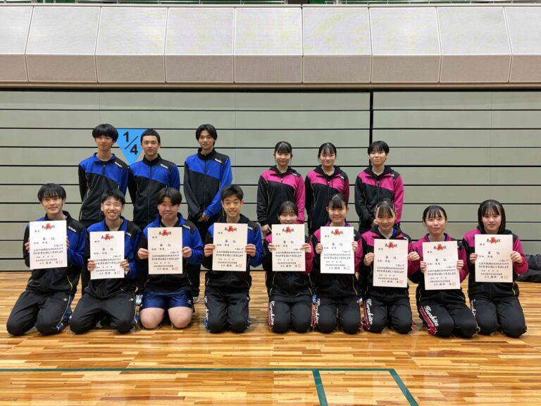
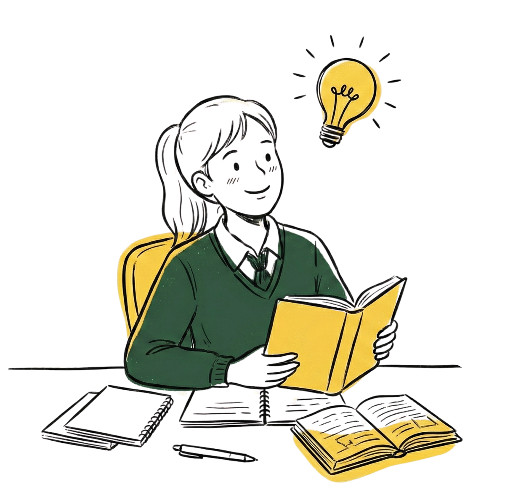
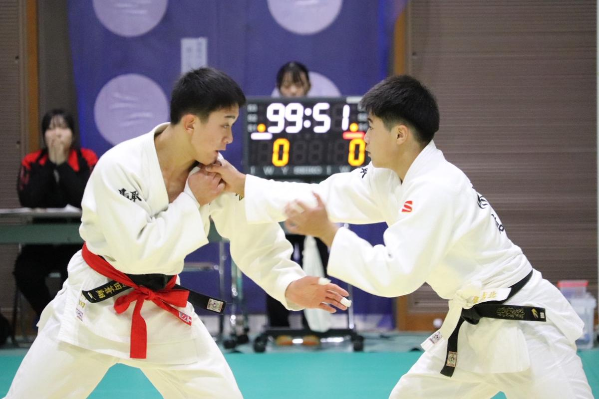
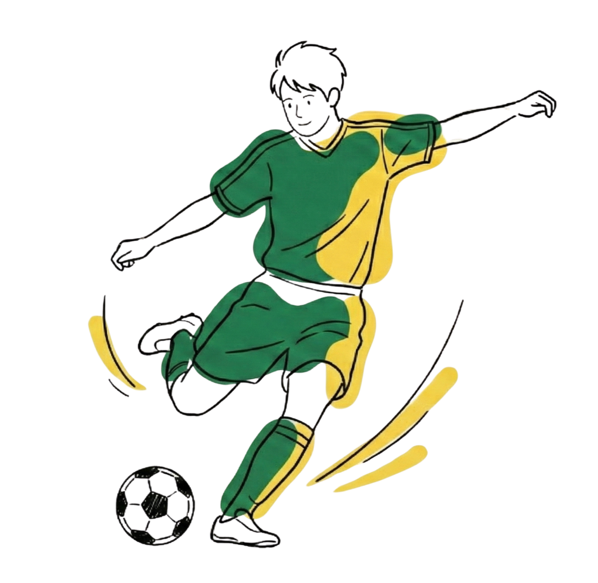
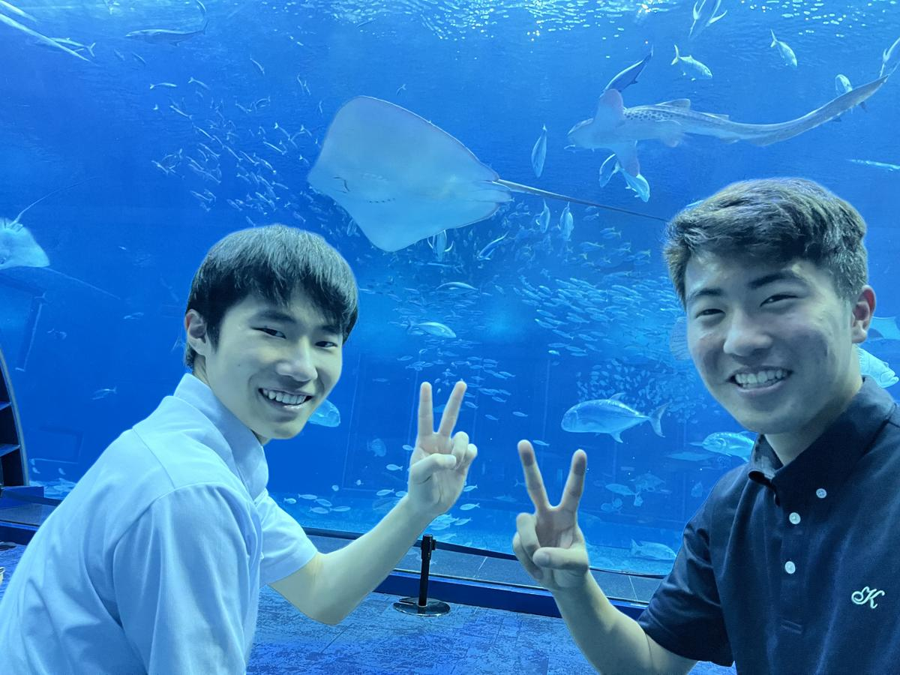
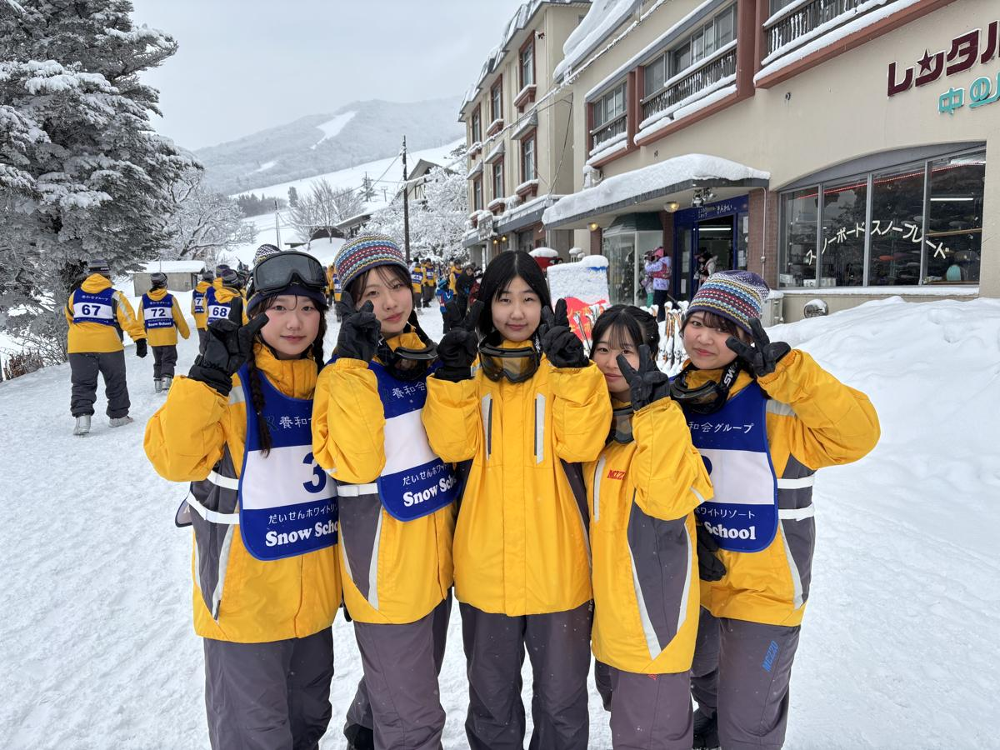

SCHOOL GUIDE
COURSE GUIDE
CLUB ACTIVITIES
SCHOOL LIFE
CAREER SUPPORT
ADMISSIONS


一人ひとりの進路希望に合わせたカリキュラムで、未来の可能性を広げます。


スポーツ・文化ともに活発な活動を行い、人間力を高めます。
卒業と同時に調理師免許を取得可能。実践的な実習でプロを育成します。
COMMUNITY
地域とつながる
地域の方々との交流や、生徒の貢献活動を紹介します

